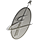
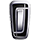
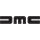
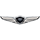
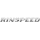

Home >> Autocatalog
 English
English
 Български
БългарскиTechnical specs, data and fuel consumption of all makes and models automobiles
A
Abarth
AC
Acura
Aixam
Alfa Romeo
Alpina
Alpine
Apollo
Arcfox
Aria
Ariel
Aro
Artega
Asia
Aspark
Aston Martin

Astro
Audi
Aurus
Austin
Autobianchi
B
B.Engineering
BAC
BAIC Motor
Baltijas Dzips
Baojun
Bee Bee
Bentley
Bertone
Bestune
Bisu
Bitter
Blonell
BMW
Bordrin
Borgward
Brabham
Brilliance
Bristol
Bufori
Bugatti
Buick
BYD
C
Cadillac
Callaway
Campagna

Carbodies
Caterham
ChangAn
ChangFeng
Chery
Chevrolet
Chrysler

Citroen
Cizeta
Corbellati
Cupra
D
Dacia

Dadi
Daewoo
DAF
Daihatsu
Daimler
Dallara

Dallas
Datsun
David Brown
DC
De Lorean
De Tomaso
Derways
Dodge
DongFeng
Doninvest
Donkervoort
DR Automobiles
DS
E
e.GO
Eadon Green
Eagle
Elemental
Engler
F
FAW
Felino
Ferrari
Fiat
Fisker
Fittipaldi
FOMM
Force Motors
Ford
FSO
Fuqi
G
GAZ
Geely
Genesis
Geo
GFG Style
Ginetta
Gleagle
GMC
Great Wall
H
Hafei
Haima
Haval
Hennessey
Hindustan
Hispano Suiza
Holden
Honda
HSV
HuangHai
Hummer
Hurtan
Hyundai
I
IMSA
Infiniti
Innocenti
Invicta
Iran Khodro
Irmscher
Isdera
IsoRivolta
Isuzu
Italdesign
Iveco
Izh
J
JAC
Jaguar
Jeep
Jiangling
K
Karlmann King
Karma
Kia
Koenigsegg
KTM
L
Lada
Lamborghini
Lancia
Land Rover
Landwind
Lexus
Lincoln
Lister
Lotus
LTI
LUAZ
Luxgen
Lvchi
M
Mahindra
Marcos
Maruti
Maserati
Maxus
Maybach
Mazda

MCC
McLaren
Mega
Mercedes-Benz
Mercury
Metrocab
MG
Milan
Minelli
MINEmobility
Mini
Mitsubishi
Mitsuoka
Monte Carlo
Morgan
Morris
Moskvich

MW Motors
N
Nissan
Noble
O
O.S.C.A.
Oldsmobile
Opel
ORA
P
Pagani
Panoz
Pariss
Paykan
Perodua
Peugeot
Pininfarina
Plymouth
Polaris
Polestar
Pontiac
Porsche
Praga
Premier
Proton
PUCH
Puma
Puritalia
Q
Qiantu
Qoros
Qvale
R
RAM
Ravon
Reliant
Renault
Renault Samsung
Rimac
Rinspeed
Rivian
Roewe
Rolls-Royce
Ronart
Rover
RUF
S
Saab
Saleen
Saturn
Sbarro
SCG
Scion
Seat
SeAZ
ShuangHuan
Sin Cars
Skoda
SMA
Smart
Soueast

Spectre
Spyker
SsangYong
SSC
Subaru
Suzuki
T